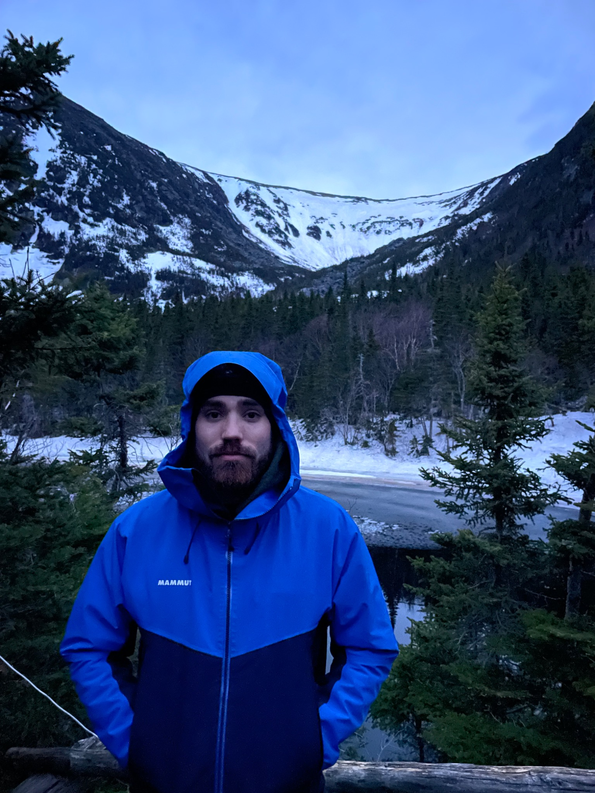
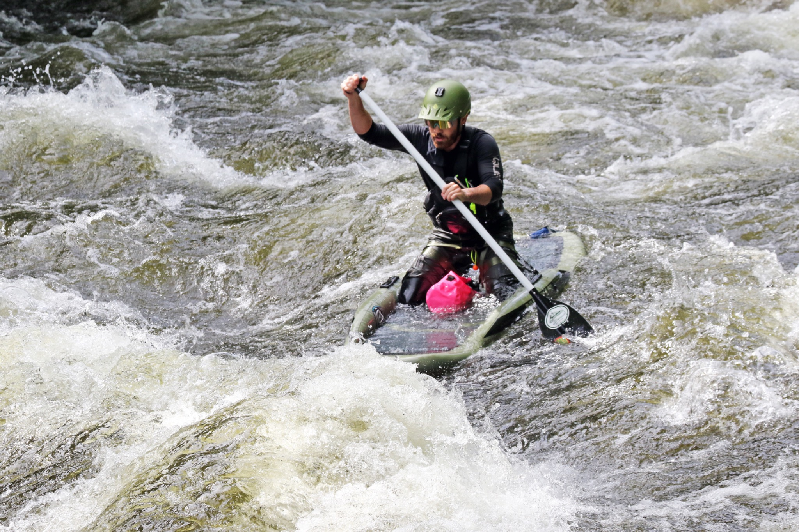
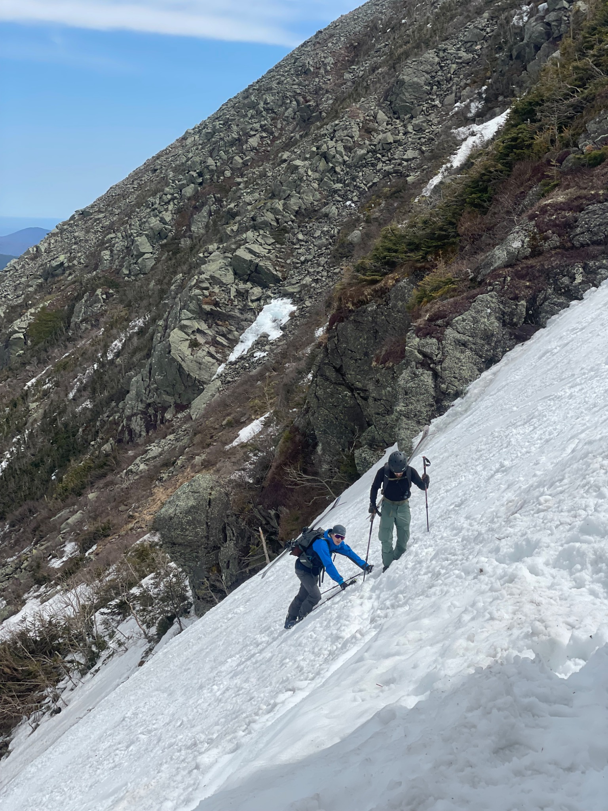
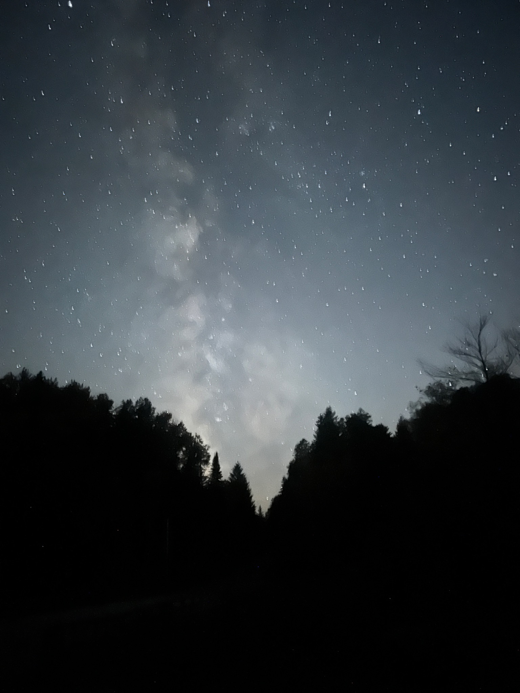
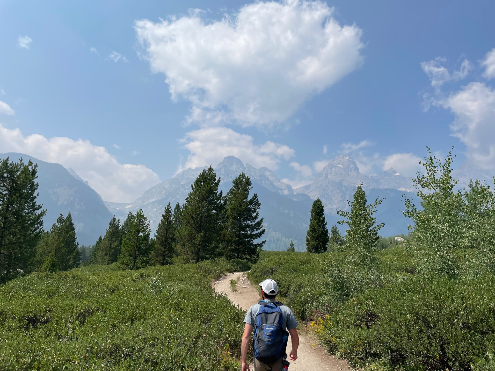

GO FAR ENOUGHTO BRING SOMETHINGBACK WITH YOU.
PHOTOGRAPHY / OUT THERE
Scroll slowly. The photographs keep their original compositions; the page moves around them.
SCROLL TO ENTER ↓




THE ARCHIVE
Loading collections…
END OF THE ROLL
Some eventually become Journal entries. Some stay as moments. Either way, they were made outside.
Continue into the Journal →